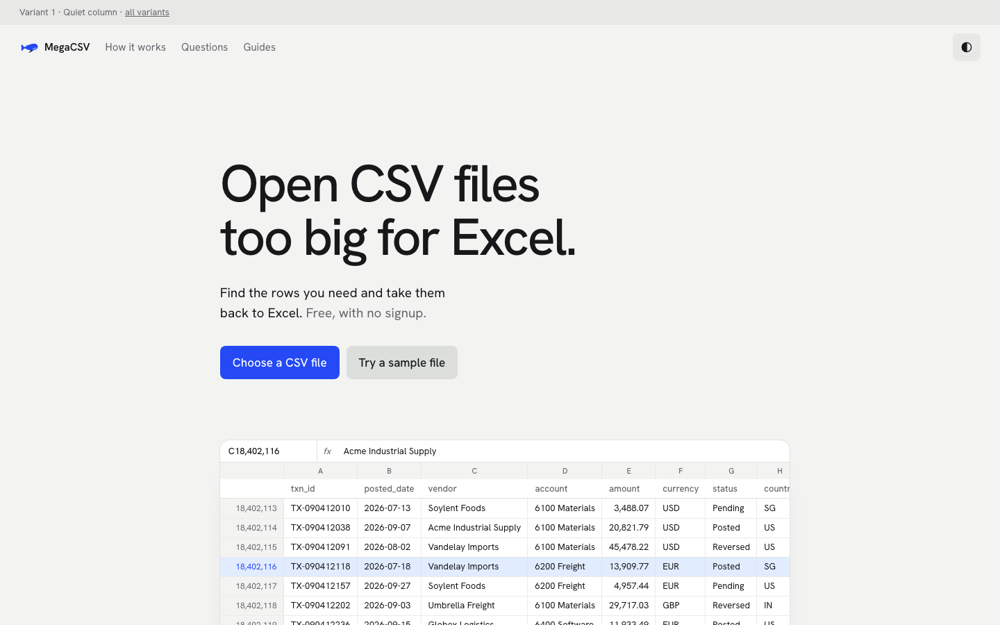
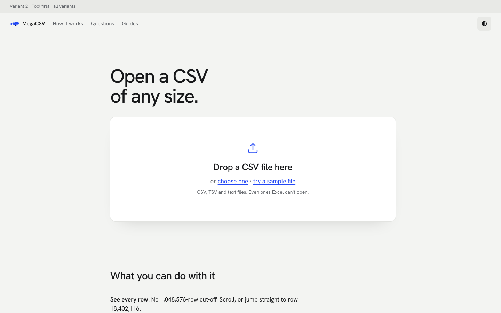
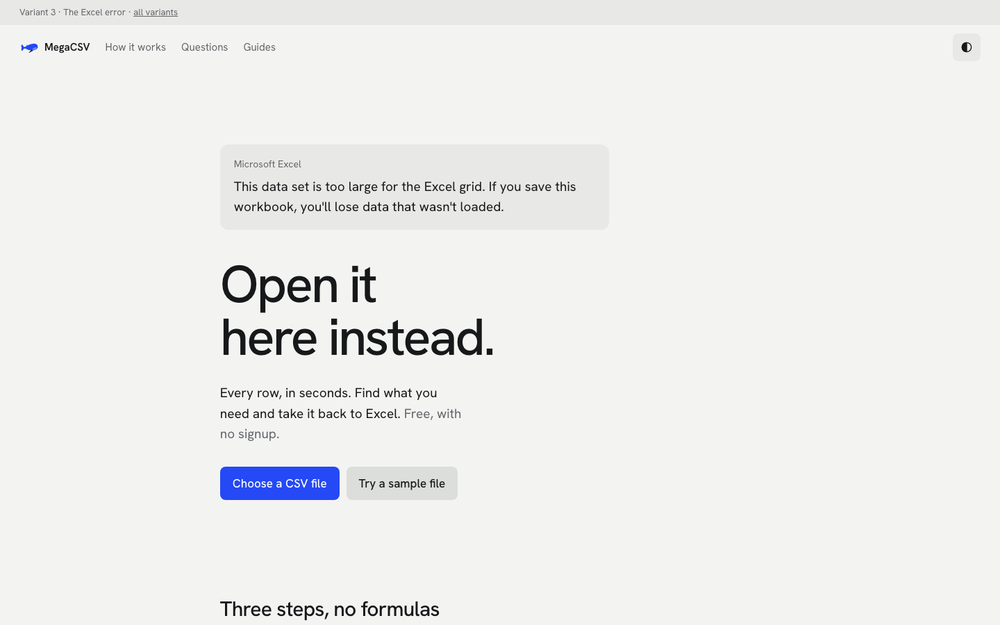
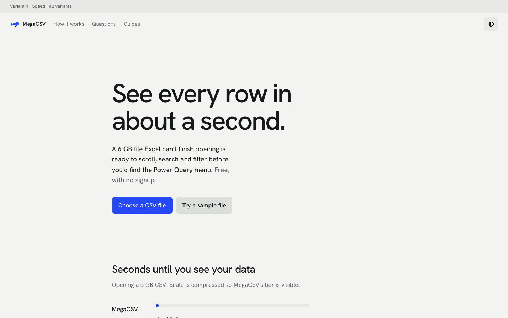
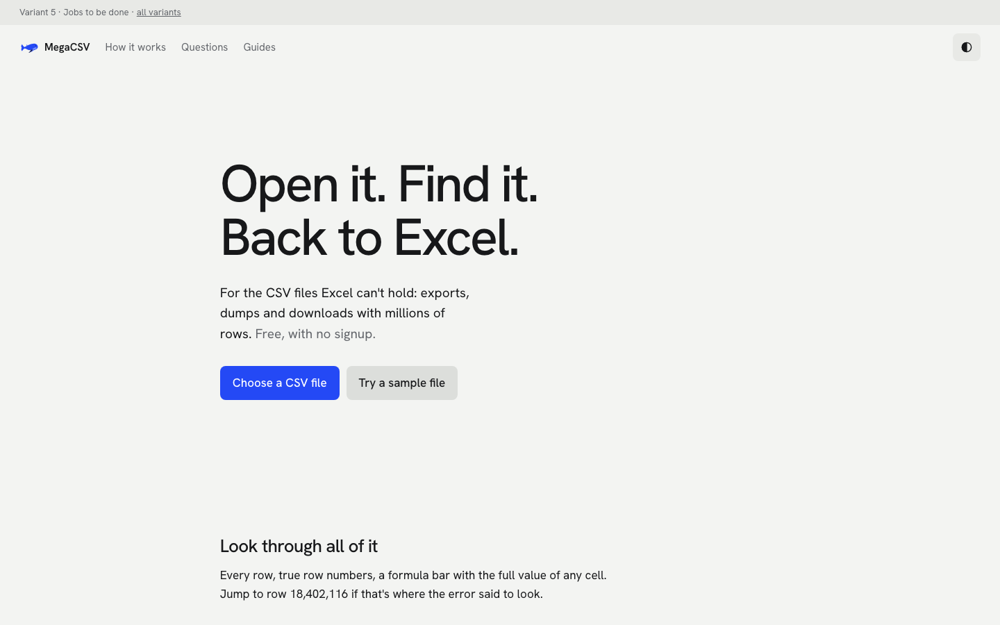
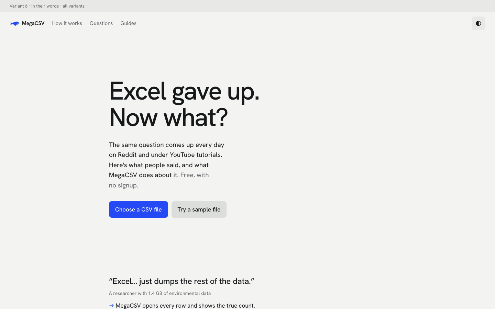

Landing page variants
Six ways to tell the same story, all in the Quiet Office design. Each has the same nav, FAQ (with FAQPage JSON-LD), footer links and SEO tags. Mix and match sections freely.

1 · Quiet columnThe Quiet Office default: headline, app preview, the Excel error, the plain-words filter, a short facts list.
2 · Tool firstThe drop zone is the hero, so visitors start using it immediately. Measured speeds below.
3 · The Excel errorOpens with the exact message people search for, then three steps, then links to the other error pages.
4 · SpeedLeads with time-to-first-row: a race chart against Excel, Power Query and cloud tools, plus a comparison table.
5 · Jobs to be doneOrganised around what people need to do (look, pull out rows, split, keep values) and who they are.
6 · In their wordsReal (anonymous) quotes from the Reddit and YouTube research, each answered by a feature.